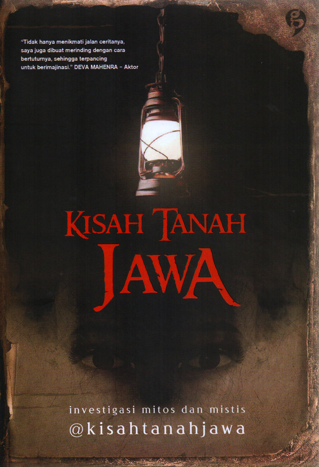

Kisah Tanah Jawa
@kisahtanahjawa
Informasi Buku
| Jumlah Halaman | 247.0 |
| Tanggal Terbit | 16 Jan 2019 |
| ISBN | 9789797809331 |
| Penerbit | Gagas Media |
| Berat | 0.28 kg |
| Lebar | 20.0 cm |
| Panjang | 14.0 cm |
Deskripsi
Tanah Jawa menyimpan banyak kisah misteri yang takkan habis diceritakan dalam semalam. Sosok misterius, ritual mistis, dan tempat angker, selalu membuat kita penasaran. Buku Kisah Tanah Jawa mengajak pembaca membuka selubung mitos dan mistis yang selama ini hanya menjadi ksak-kusuk di masyarakat.
Review
Oleh : Ipeh Alena
Termasuk bacaan ringan yang bisa selesai cepat.
Berisi mitos, penjelasan mengenai sejarah kolonial sampai pemahaman masalah Kejawen.
Awalnya, sangat memuji gambar ilustrasi yang terdapat di dalamnya. Tapi, menjelang akhir jadi nyesel.
Soalnya ada gambar setan yang bikin saya kaget.
Intinya sih kalau males ikutin cuitannya KTJ di twitter boleh lah beli bukunya.
Karena informatif juga. Biar kalo diajak sesat gak ketarik karena ga tau.
Tentang Saya

Pemuda gabut, sering berdiam diri di kosan untuk mencari inspirasi...
Pengumuman
Ingin review kalian ada di website ini? Kirim review kalian ke email author web yaa,
agar kawan-kawan kalian tahu buku yang menarik bagi kalian apa saja..
Terimakasih yaa..
Temukan saya di..
Email : nekkawai5@gmail.com